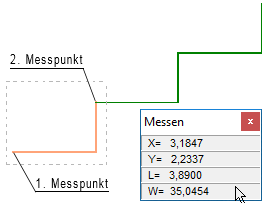

")
")
Die markierten Elemente werden über X- und Y-Werte dupliziert.
1.Element oder Bereich festlegen
§Ziehen Sie einen Rahmen durch das Anklicken von zwei Punkten um die zu duplizierenden Zeichenelemente oder klicken Sie einzelne Elemente an. Bestätigen Sie die Auswahl mit Rechtsklick. [1.Punkt/Element]; [2.Punkt].
-Die Zeichenelemente werden markiert.
-Um Elemente wieder abzuwählen, klicken Sie im unteren Funktionsbereich auf Entfer. Ziehen Sie einen Rahmen um die entsprechenden Elemente oder klicken Sie einzelne Elemente an. Bei gedrückter Umschalttaste (Shift) wird automatisch der Entfer-Modus aktiviert – am Cursor wird ein Minuszeichen eingeblendet.
§Geben Sie die Anzahl der Duplikate an. [Wie oft].
2.Teilzeichnung platzieren
§Tippen Sie den horizontalen und vertikalen Abstand in den eingestellten Eingabeeinheiten ein. [X-Wert/Winkel]; [Y-Wert/Abstand].
Alternativ können Sie auch einen Winkel für X oder Y eintippen, unter dem die Elemente wiederholt werden sollen (z. B. w45 = Winkel 45°). Wenn Sie bei X einen Winkel eintippen, geben Sie anschließend den Abstand zwischen den Duplikaten ein.
Beispiel: Linear duplizieren mit der Messen-Funktion
 |
Sie können auch Werte mittels der Messen-Funktion ermitteln und einen bestimmten Wert per Mausklick in die aktive Abfrage übernehmen. §Aktivieren Sie die Messen-Funktion mit §Messen Sie mit der Funktion [Pnk/Pnk] den Winkel und die Abstände (s. Beispiel) und bestätigen Sie mit Rechtsklick. [1 Messpunkt]; [2. Messpunkt]. Die Messergebnisse werden im Fenster Messen angezeigt. §Ziehen Sie einen Rahmen um die zu duplizierenden Zeichenelemente und bestätigen Sie mit Rechtsklick. [1.Punkt/Element]; [2.Punkt]. §Geben Sie als Anzahl der Duplikate 2 ein und bestätigen Sie mit der Eingabetaste oder Rechtsklick. [Wie oft]. §Tippen Sie die Hilfsfunktion w ein und klicken Sie im Fenster Messen auf das Messergebnis des Winkels (W= 35,0454), um dieses in die Eingabe zu übernehmen. [X-Wert/Winkel]. Der angeklickte Winkel wird in die Eingabe geschrieben. Die Eingabe ist damit abgeschlossen und die Abfrage des Abstandes wird aktiviert. §Klicken Sie im Fenster Messen auf das Messergebnis der Länge (L= 3,8900), um dieses ebenfalls in die Eingabe zu übernehmen. [Y-Wert/Abstand]. Nach dem Anklicken des Messergebnisses werden die Duplikate gezeichnet. Sie können das Fenster Messen schließen. |

Zugehörige Referenzen: